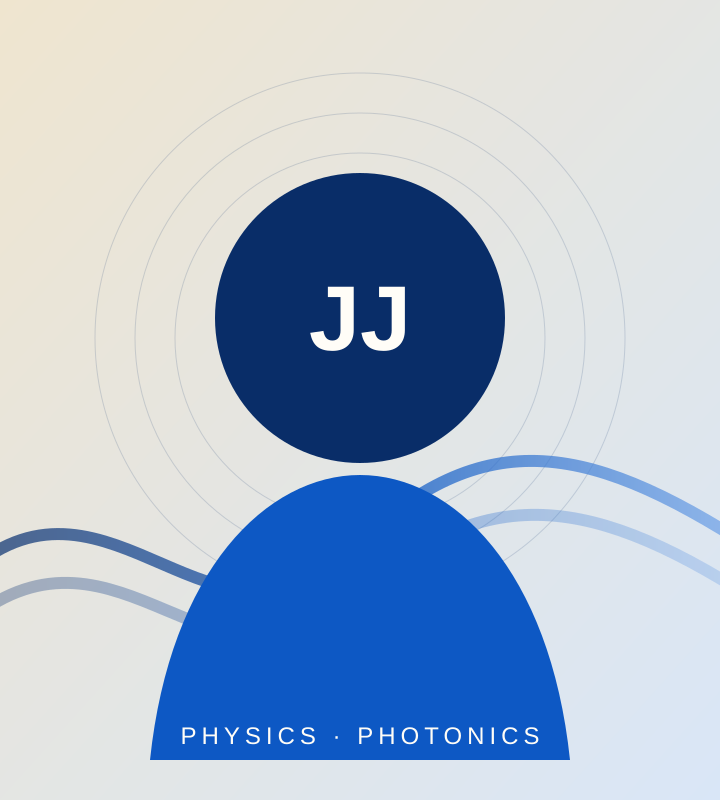

01 · BARC
High-pressure Raman spectroscopy
Investigated Na₂Cu₂TeO₆ using a diamond anvil cell, 532 nm Raman excitation and pressure-dependent measurements extending to approximately 12 GPa.
Read project report →
Experimental physicist
from IIT Bombay
1/4 · About
About
Somewhere,
something
incredible is
waiting to be
known. — Carl Sagan
My academic journey is dedicated to exploring the complexities of physics and pushing boundaries through hands-on research.
My M.Sc. work began with transparent electrodes for photovoltaics, but I became increasingly drawn to the optical physics behind the device: interference, nanoscale morphology, wavelength-dependent optical constants and practical light management.
I value models that remain connected to what can actually be fabricated and measured. That mindset has guided my work with RF sputtering, metal evaporation, optical simulations, Raman spectroscopy, diamond anvil cells and synchrotron experiments.
This progression now motivates me to carry thin-film optical design and fabrication into compact photonic components and hybrid quantum systems, where material interfaces directly shape light–matter interaction.
When I am not working on complex scientific problems, I channel my creativity into fine art and photography, and maintain an active lifestyle through inter-university swimming.
Selected experiences that connect thin-film photonics, extreme-condition measurements and my developing direction in quantum technologies.
Investigated Na₂Cu₂TeO₆ using a diamond anvil cell, 532 nm Raman excitation and pressure-dependent measurements extending to approximately 12 GPa.
Read project report →Joined a BARC experimental campaign at RRCAT's Extreme Condition XRD Beamline, completed synchrotron safety training and participated in high-pressure measurements.
View research experience →Participated in the International Workshop on Semiconductor Epitaxy & Devices for Quantum Technologies, strengthening my exposure to quantum-device materials and fabrication.
View academic development →Physics training supported by laboratory work, optical modelling and independent research.